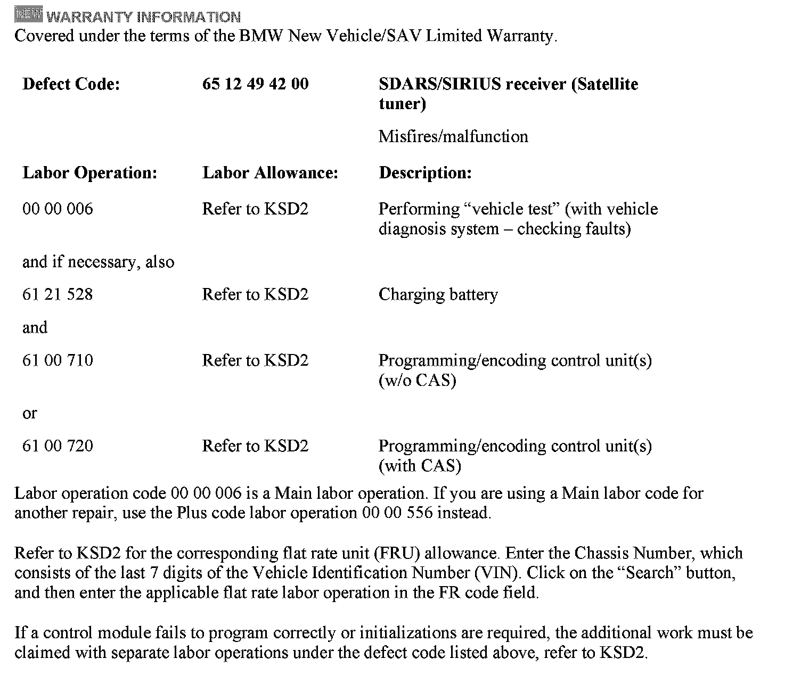

Audio - Intermittently 'Acquiring' Is Displayed
SI B65 37 09Audio, Navigation, Monitors, Alarms, SRS
February 2012
Technical Service
This Service Information bulletin supersedes SI B65 37 09 dated March 2010.
[NEW] designates changes to this revision
SUBJECT
RAD2+ Radio: Intermittently, "acquiring" Is Displayed in SDARS Mode
MODEL
E82, E88 (1 Series)
E89 (Z4)
E90, E91, E92, E93 (3 Series)
Vehicles produced from 09/2009 with option 663 (RADIO BMW PROFESSIONAL) and option 655 (SATELLITE RADIO)
SITUATION
Intermittently, "acquiring" is displayed in SDARS mode after the ignition is turned on. Audio from the last selected station can still be heard. This happens most often after the vehicle was in full sleep mode (>20 minutes).
^ The SDARS station cannot be changed but the audio output may be affected.
^ The volume cannot be raised or lowered.
^ Full functionality is usually restored after another sleep mode cycle.
Note:
As of September 2009, the satellite receiver (SDARS) has been integrated into the head unit (RAD2+).
CAUSE
Software issue in the RAD2+ in conjunction with the integrated SDARS module
CORRECTION
Do not replace parts!
Reprogram the vehicle using ISTA/P 2.37.0 or later.
Note that ISTA/P will automatically reprogram and code all programmable control modules that do not have the latest software.
[NEW] Note: When the ISTA system message displays:
[NEW] Battery voltage only "XX.XX" V. Please connect charger.
[NEW] Please note the displayed battery voltage reading in the repair order comments section.
For information on programming and coding with ISTA/P, refer to CenterNet / Aftersales Portal / Service / Workshop Technology / Vehicle Programming.

[NEW] WARRANTY INFORMATION